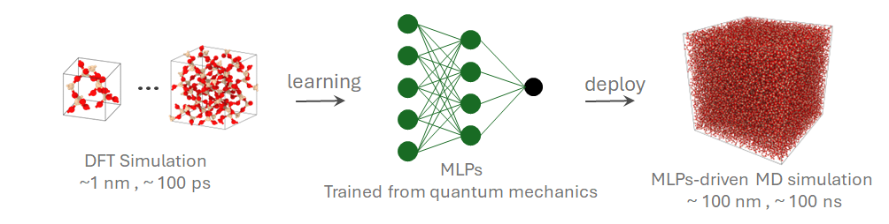
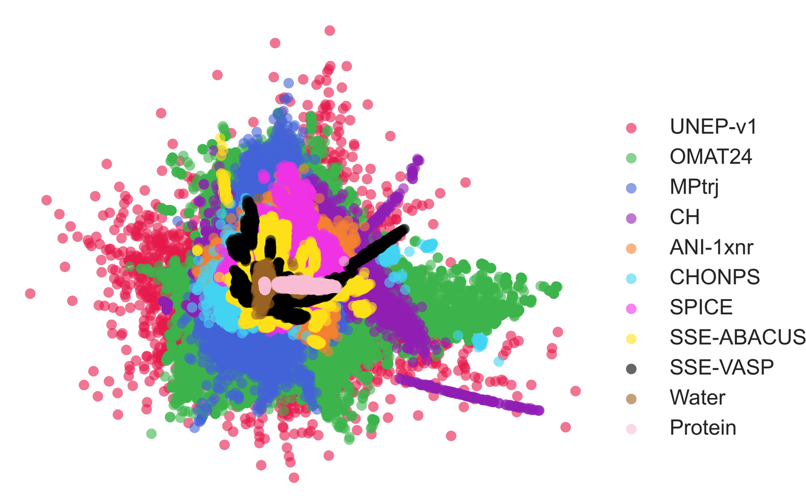
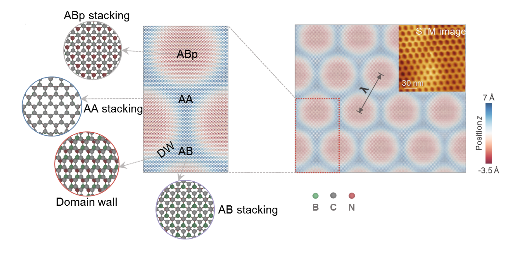
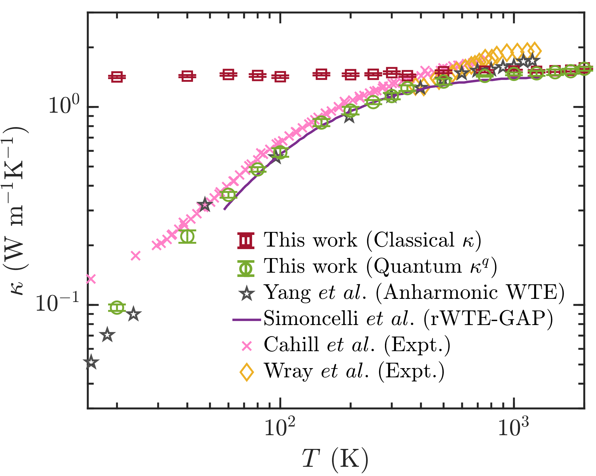

Research
Thermal transport and AI-enabled atomistic simulation
My work connects physics-informed simulation, machine-learning potentials, and open computational tools for understanding heat transport in low-dimensional, interfacial, and complex material systems.

Directions
Research focus



Methods
From quantum data to large-scale molecular dynamics
The workflow combines DFT-labeled training data, neuroevolution potentials, and molecular dynamics analysis to bridge accuracy and scale in materials simulation.
Read related publications